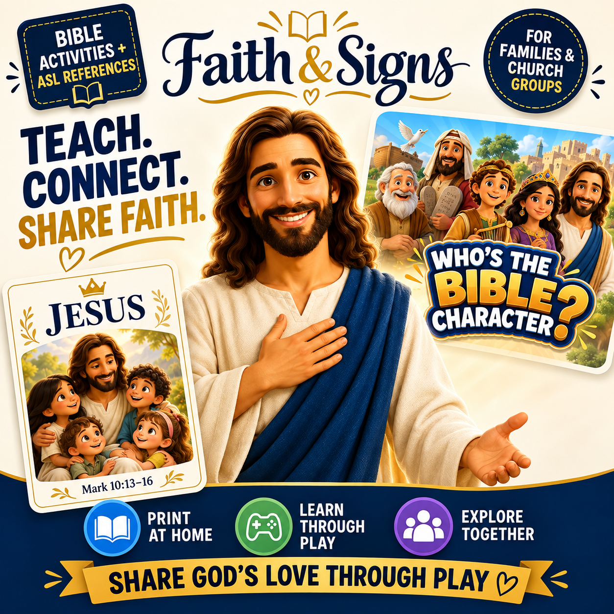
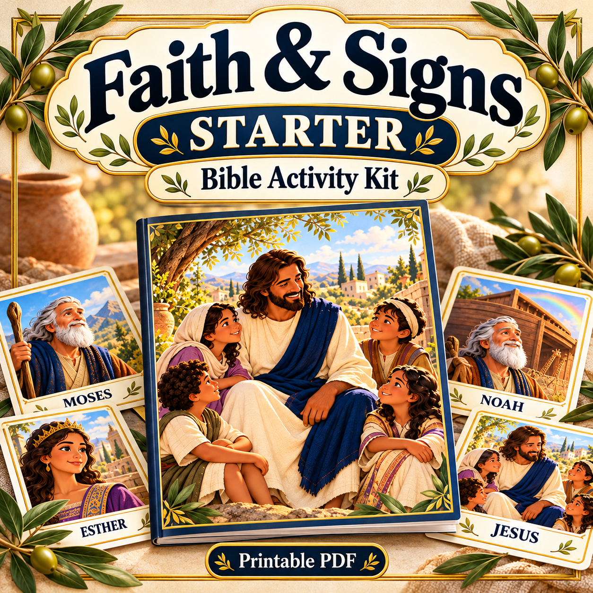
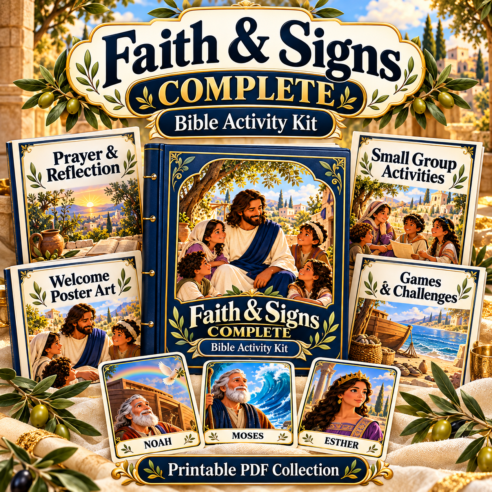

Noah matching pair
N - O - A - H · ASL fingerspelling
Printable PDF format · One-time purchase · No physical items shipped
Bible stories, prayer prompts and visual activities for shared moments with deaf and hearing children.
Digital PDFs · US Letter · Print at home

Discover illustrated Bible characters, matching activities and resources for meaningful time together.
N - O - A - H · ASL fingerspelling
Two-step reference · one cited variant
D - A - V - I - D · ASL fingerspelling
E - S - T - H - E - R · ASL fingerspelling
Alternating middle-finger contacts
Printable resources for your next Bible activity.
Printable resources for your next Bible activity.
Printable resources for your next Bible activity.
Printable resources for your next Bible activity.
Simple preparation and play instructions.
Scroll to explore the kit. Select an image to enlarge it.
US Letter PDFs with clear margins and instructions for printing and cutting.
Character stories, matching layouts and guided group activities for a familiar teaching routine.
Choose your kit, download your PDFs and print the pages for your activities.
Illustrated sign references and fingerspelled names accompany the Bible character activities.
Choose a Bible story, prepare your cards and bring everyone into the activity.
Start with one character and the Bible context shown on the page.
Print and cut the matching cards. Explore the accompanying ASL references.
Arrange the communication support your group needs and offer ways to respond.
Print at home and prepare your next activity at your own pace.
Meet five Bible characters through colorful artwork, story prompts and matching activities.
For family activities, Sunday school and children’s ministry.
Add prayer, welcome messages, small-group activities and Bible games to your collection.
Prayer prompts and reflection activities to share together.
Illustrated welcome messages with Bible conversation references.
Guided activities with materials, setup steps and participation choices.
A clue sheet and three ways to play with the five Bible characters.
Choose the resources that fit your next Bible activity. The price and payment options appear at checkout.

One-time payment · Digital files only

One-time payment · Digital files only
Choose your kit and complete your purchase through Kiwify. Check the price, payment methods and refund conditions on the checkout page before paying.
No. Choose your kit with a one-time payment.
After payment confirmation, follow the access instructions sent by Kiwify to the email address used at checkout.
No. These are digital printable PDFs. You print the materials yourself.
Open the files in a standard PDF reader. Print at Actual Size on US Letter paper.
The available payment methods and final price are displayed at Kiwify checkout.
Starter includes the five-character matching activity PDF and access instructions. Complete adds the four extra resource PDFs shown above.
Bring Bible character artwork, story prompts and matching activities to your family or group.
Choose my kitDigital PDFs · US Letter · Print at home